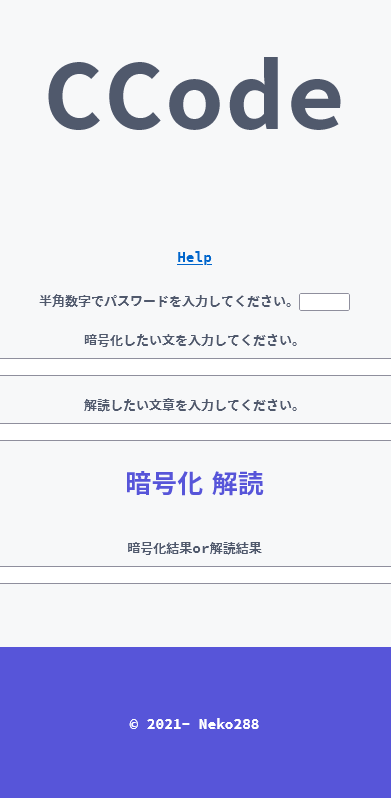
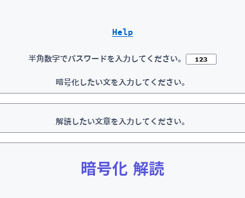
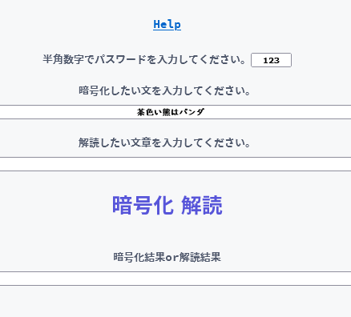
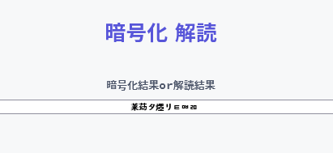
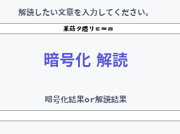
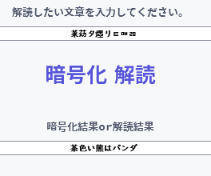
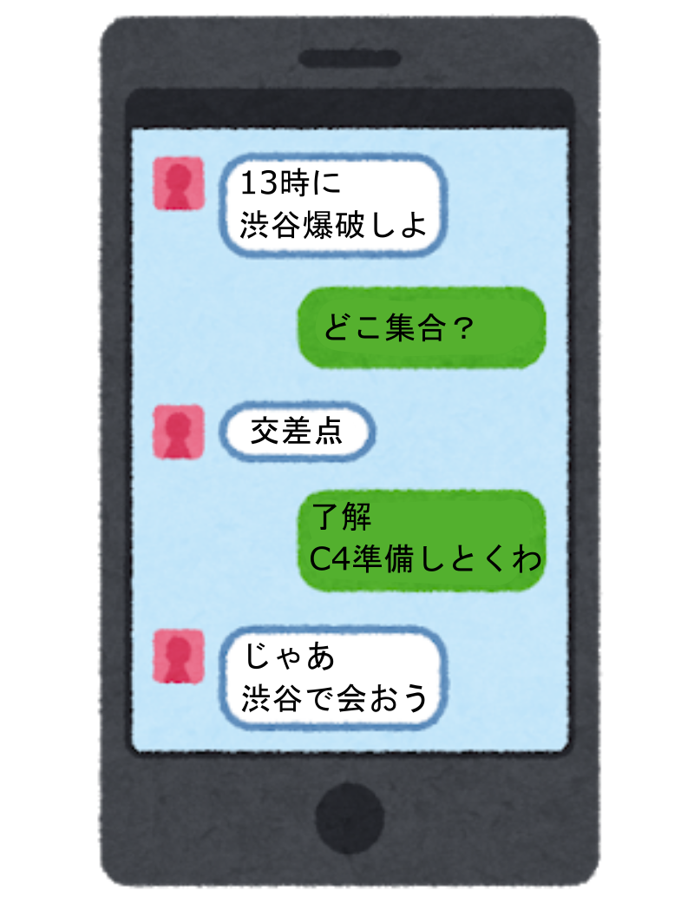
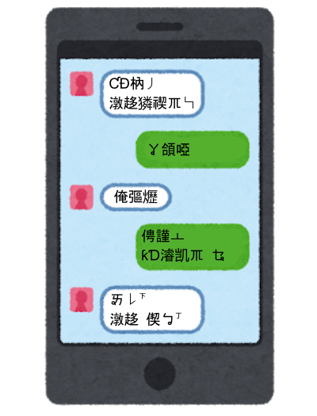

CCode web
2021.11.23
CCode webにアクセス
これは何？
暗号を作れるアプリ、CCodeのウェブ版です。
<アプリ版のページへ>使い方
暗号をつくる
CCode webのページにアクセスします。
「半角英数字でパスワードを入力」の横にある所に数字のパスワードを入力してください。文字だとエラーが起きます。
今回は、123をパスワードにします。
パスワードを入力したら、暗号にしたい文章を入力してください。言語は何でも構いません。「مجهے کتے اچهے 」こんなんでも、「개가 좋아 」こんなんでもOKです。
入力したら、青い文字で「暗号化」と書かれているボタンをクリックしてください。クリックすると暗号化結果(暗号)が表示されます。
「莱苭タ爅リㅌㅮㄻ」これが暗号となります。
ちなみに、暗号は自動でコピーされます。暗号は普通に入力できるものでは無い場合が多いので、ペーストして利用することをおすすめします。
解読する
暗号化はできたので、解読していきます。
解読するには、暗号を作るときに使ったパスワードが必須になります。それがないと解読できません。
「解読したい文章を入力してください。」の下にある入力欄に暗号を入力してください。暗号を普通にキーボードで入力するのは至難の業なので、コピー&ペーストすることをおすすめします。
入力(ペースト)したら、青い文字で書かれている「解読」ボタンをクリックしてください。
成功です。
どういう仕組み？
コンピュータは文字を文字として理解できないので、文字を数字として扱います。
これを利用して暗号を作ります。
入力された文字を数字にして、パスワードと足します。できた数字を再び文字に戻します。出来た文字が暗号になります。
もっと詳しく言うと、文字をUnicode値にして(Unicode値は数字)、パスワード+Unicode値します。出来た数字を文字に戻しします。こうすれば暗号ができます。解読するときは、暗号をUnicode値(数字)に戻してパスワードを引きます。そうすると暗号を解読できます。
Unicodeについての詳しい説明はこのサイトがわかりやすいです。
例
「はろー」の「は」は12399という数字になります。
パスワードが123なら「12399+123」とします。
すると「は」が「リ」になります。このようにして暗号を作ります。
解読するときは逆のこと(引き算)をします。
概要
CCodeはもともとPythonというプログラミング言語で作られたものでしたが、Pythonで作ったものだとサイト上で使うことはできません。
どうしても、サイトからCCodeを使いたかったのでJavascriptというサイト上でも使えるプログラミング言語に移植しました。
(正確にはサイト上というより、ブラウザ上動かせるフロントエンド言語です。)
使用例
テロ組織のLINEで

上のようなやり取りがあったとします。このメッセージが警察に傍受されていたら計画はばれて失敗するでしょう。
こんなときに、CCodeを使えば下の画像のように暗号化してメッセージを送ることができるので誰かにに計画がバレル心配はありません。

もちろん、暗号を解読するためのカギを持っていれば暗号を解読できるので、テロ組織の二人はちゃんとメッセージを読めています。
詳細
言語 : Javascript(最新)
使用ライブラリ : None